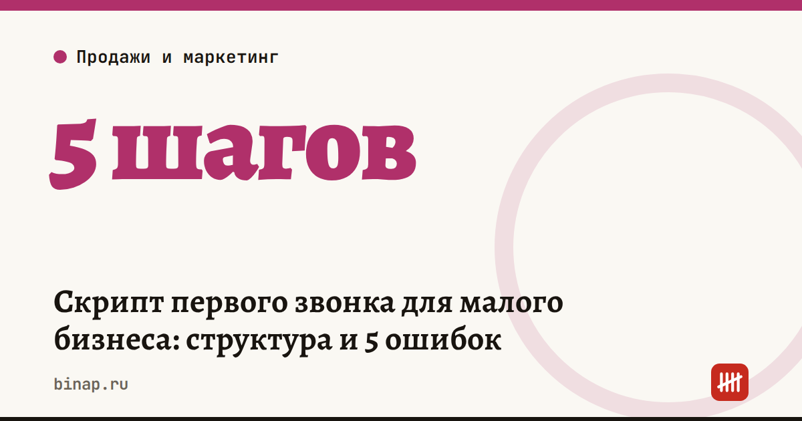

Скрипт первого звонка для малого бизнеса: структура и 5 ошибок

Хороший скрипт первого звонка — это не текст для зачитывания, а порядок разговора: представиться, назвать причину звонка, задать 2–3 вопроса о задаче клиента и договориться о следующем шаге с датой. Цель первого звонка — не продать, а получить следующую встречу, расчёт или пробную покупку.
Коротко
- Первый звонок решает одну задачу — следующий шаг с датой, а не продажу.
- Структура: приветствие → причина звонка → вопросы о задаче → короткое предложение → следующий шаг.
- Главные ошибки: монолог о компании, цена в первой минуте, вопросы «да/нет», разговор без следующего шага, отсутствие записи результата.
- Проверяйте скрипт по цифрам: какая доля звонков заканчивается назначенным следующим шагом.
Сроки, изменения и разборы для ИП и самозанятых — каждое утро в Telegram и MAX. Подпишитесь, чтобы не пропустить.
Структура звонка: 5 шагов
1. Приветствие и имя — 5–10 секунд. «Добрый день, Анна? Меня зовут Олег, компания [название]». Без «удобно ли вам говорить» в первой фразе — на этот вопрос проще всего ответить «нет».
2. Причина звонка — 10–15 секунд. Почему вы звоните именно этому человеку: он оставил заявку, вы работаете с похожими компаниями, увидели новость о его открытии. Причина, связанная с клиентом, удерживает внимание лучше рассказа о себе.
3. Вопросы о задаче — 1–3 минуты. 2–3 открытых вопроса: «Как сейчас решаете [задачу]?», «Что в этом не устраивает?», «Как поймёте, что стало лучше?». Слушайте и записывайте ответы — они понадобятся для предложения.
4. Короткое предложение — 30 секунд. Свяжите ответ клиента с тем, что вы делаете: «Вы сказали, что заявки теряются вечером. Мы закрываем это так-то». Одна-две выгоды, без перечня всех услуг.
5. Следующий шаг с датой. Встреча, расчёт, демонстрация, пробный заказ — и конкретная дата: «Давайте я пришлю расчёт сегодня, а в четверг в 11:00 созвонимся на 10 минут?».
5 ошибок, которые убивают первый звонок
| Ошибка | Что происходит | Как исправить |
|---|---|---|
| Монолог о компании | клиент теряет интерес через 20–30 секунд | причина звонка — про клиента, о себе — одна фраза |
| Цена в первой минуте | разговор сводится к «дорого» | сначала задача и выгода, цена — после вопросов |
| Вопросы «да/нет» | разговор быстро заканчивается | открытые вопросы: «как», «что», «почему» |
| Нет следующего шага | «я подумаю» — и тишина | всегда предлагайте конкретное действие и дату |
| Результат не записан | через неделю никто не помнит, о чём договорились | итог каждого звонка — в CRM или таблицу сразу |
Ответы на частые возражения
- «Пришлите на почту». «Конечно. Чтобы прислать то, что вам пригодится, уточню два момента…» — и вопросы из шага 3.
- «Нам не нужно». «Понимаю. А как сейчас решаете [задачу]?» — часто «не нужно» значит «не понимаю зачем».
- «Дорого». «С чем сравниваете?» — и сравнение по итоговой выгоде, а не по цене.
- «Перезвоните через месяц». «Хорошо. Что должно измениться за этот месяц?» — и дата в календаре.
Готовые варианты ответов на возражения под ваш продукт поможет написать нейросеть — запросы в статье нейросеть в продажах: 10 задач.
Как проверить, что скрипт работает
Расчёт редакции: менеджер делает 40 первых звонков в неделю, следующий шаг назначает в 8 из них — конверсия 20%. После правки скрипта — 12 из 40, то есть 30%. При той же доле сделок из встреч это +50% продаж без новых заявок.
Смотрите на одну цифру — долю звонков, которые закончились назначенным следующим шагом. Меняйте за раз один элемент скрипта и сравнивайте через неделю. Как собрать всю воронку и найти слабый этап — в статье воронка продаж для малого бизнеса.
Что сделать
- Запишите свой скрипт по 5 шагам — на одну страницу.
- Прослушайте 5 последних звонков: на каком шаге чаще всего обрывается разговор.
- Добавьте в CRM или таблицу поле «следующий шаг и дата» — обязательное.
- Через неделю посчитайте долю звонков с назначенным следующим шагом.
Частые вопросы
Нужно ли читать скрипт дословно? Нет. Скрипт задаёт порядок и ключевые фразы, а говорить лучше своими словами — клиент слышит, когда читают по бумажке.
Сколько должен длиться первый звонок? Столько, сколько нужно, чтобы понять задачу и договориться о следующем шаге. Обычно 3–7 минут; если разговор затягивается — предложите встречу.
Что делать, если клиент просит сразу назвать цену? Назовите диапазон «от» и объясните, от чего зависит итог, — и переходите к вопросам о задаче.